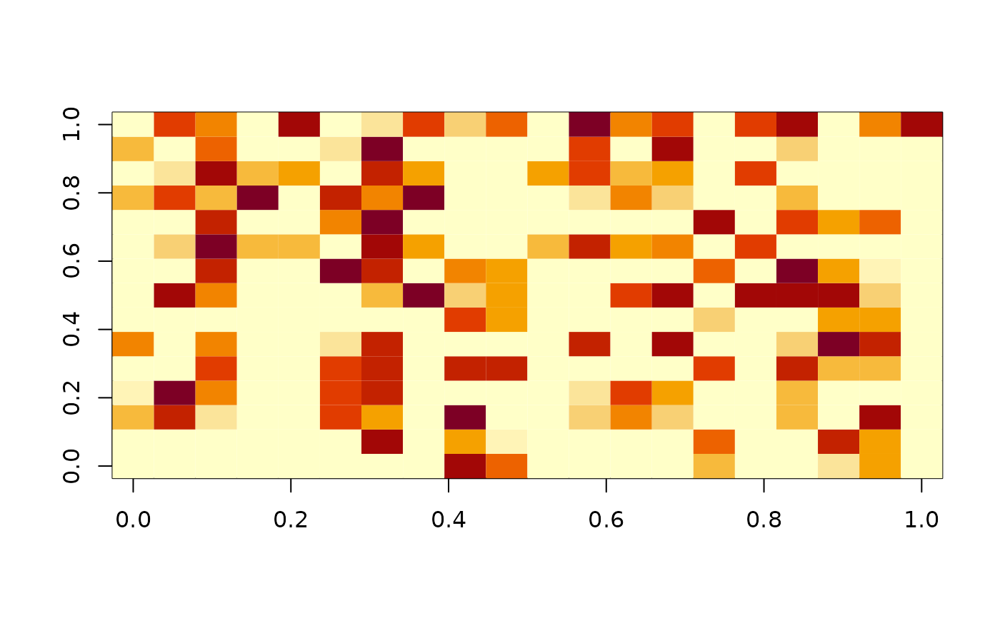

rdist.RdGiven two sets of locations rdist and fields.rdist.near computes the full
Euclidean distance matrix among all pairings or a sparse version for points within a
fixed threshhold distance. rdist.vec computes a vector of pairwise distances
between corresponding elements of the input locations and is used in empirical
variogram calculations.
rdist(x1, x2 = NULL, compact = FALSE)
fields.rdist.near(x1,x2, delta, max.points= NULL, mean.neighbor = 50)
rdist.vec(x1, x2)Matrix of first set of locations where each row gives the coordinates of a particular point.
Matrix of second set of locations where each row gives the coordinates of a particular point. If this is not passed or given as NULL x1 is used.
Whether or not to return a distance matrix in compact form inheriting class ``dist'' (as returned by the dist function in base R). Only values for one triangle of the symmetric distance matrix are returned. This saves time evaluating the returned matrix and the covariance. Note that this option is ignored when x2 is not NULL.
Threshhold distance. All pairs of points that separated by more than delta in distance are ignored.
Size of the expected number of pairs less than or equal to delta. The default is set to the nrow(x1)*mean.neighbor.
Sets the temp space for max.points
Let D be the mXn distance matrix, with m= nrow(x1) and n=nrow( x2). The elements are the Euclidean distances between the all locations x1[i,] and x2[j,]. That is,
D.ij = sqrt( sum.k (( x1[i,k] - x2[j,k]) **2 ).
rdist
The distance matrix D is returned.
fields.rdist.near
The elements of D that are less than or equal to delta are returned in
the form of a list.
List components:
Row and column indices of elements
(Distances ( D.ij)
Dimensions of full distance matrix.
This is a simple sparse format that can be manipulated by several fields functions. E.g. ind2spam will convert this list to the format used by the spam sparse matrix package. ind2full will convert this to an ordinary matrix with zeroes.
More about fields.rdist.near:
The sparse version is designed to work with the sparse covariance functions in fields and anticipates that the full matrix, D is too large to store. The argument max.points is set as a default to nrow( x1)*100 and allocates the space to hold the sparse elements. In case that there are more points that are within delta the function stops with an error but lists the offending rows. Just rerun the function with a larger choice for max.points
It possible that for certain x1 points there are no x2 points within a distance delta. This situation will cause an error if the list is converted to spam format.
stationary.cov, Exp.cov, rdist.earth, dist, ind2spam, ind2full
out<- rdist( ChicagoO3$x)
# out is a 20X20 matrix.
out2<- rdist( ChicagoO3$x[1:5,], ChicagoO3$x[11:20,])
#out2 is a 5X10 matrix
set.seed(123)
x1<- matrix( runif( 20*2), 20,2)
x2<- matrix( runif( 15*2), 15,2)
out3<- fields.rdist.near( x1,x2, delta=.5)
# out3 is a sparse structure in list format
# or to "save" work space decrease size of temp array
out3<- fields.rdist.near( x1,x2, delta=.5,max.points=20*15)
# explicitly reforming as a full matrix
temp<- matrix( NA, nrow=out3$da[1], ncol= out3$da[2])
temp[ out3$ind] <- out3$ra
# or justuse
temp<- spind2full( out3)
image( temp)

# this is identical to
temp2<- rdist( x1,x2)
temp2[ temp2<= .5] <- NA
#compute pairwise distance vector
x1 = 1:10
x2 = seq(from=10, to=1)
rdist.vec(x1, x2)
#> [1] 9 7 5 3 1 1 3 5 7 9
#calculate output matrix in compact form:
distOut = rdist(1:10, compact=TRUE)
distOut
#> 1 2 3 4 5 6 7 8 9
#> 2 1
#> 3 2 1
#> 4 3 2 1
#> 5 4 3 2 1
#> 6 5 4 3 2 1
#> 7 6 5 4 3 2 1
#> 8 7 6 5 4 3 2 1
#> 9 8 7 6 5 4 3 2 1
#> 10 9 8 7 6 5 4 3 2 1
as.vector(distOut)
#> [1] 1 2 3 4 5 6 7 8 9 1 2 3 4 5 6 7 8 1 2 3 4 5 6 7 1 2 3 4 5 6 1 2 3 4 5 1 2 3
#> [39] 4 1 2 3 1 2 1